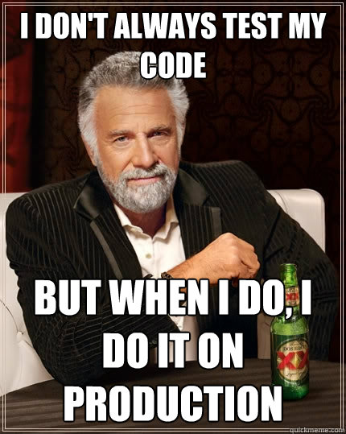
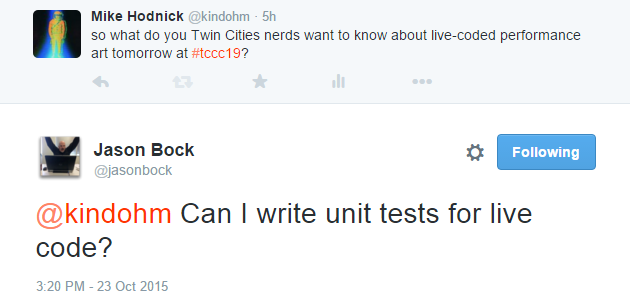

Mike Hodnick | @kindohm | github.com/kindohm
Music, graphics, text, ???


Norah Lorway & Hellocatfood
The Force
note = C
note.play(lefthand, loudly)
scale = [C, C#, F, G, G#]
scale.choose.play
10 do
scale.choose.play -- here you play a random note from scale
1.wait; -- wait for a second
endif(lefthand.busy == true) {
righthand.copy(lefthand.note+7) -- the right hand is angry!
} else {
4 do
scale.play(righthand) -- slowly but concentrated
end
}Live-Coded Dancer